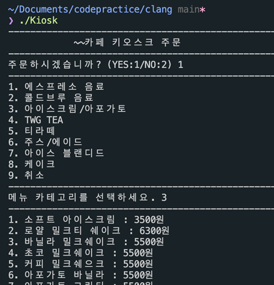
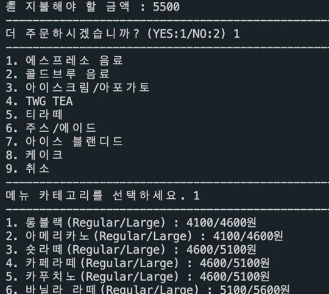
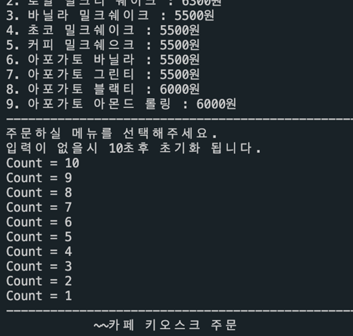
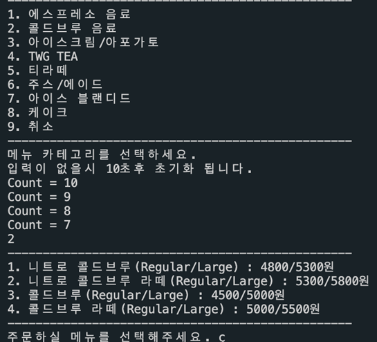

키오스크 프로그램
- ROLE
- 사용자 주문 기능, 입력 대기 기능
- DURATION
- 2021.03 ~ 2021.04
- TEAM
- 개인 프로젝트
- TECH STACK
- Linux, C, gcc 9.3.0
프로젝트 요약
- Linux 환경에서의 코딩 및 컴파일을 숙련하고 스레드 프로그래밍을 활용하기 위한 프로젝트이다.
- 사용자는 변수에 저장된 값을 기준으로 메뉴를 제공받고 주문할 수 있다.
- 주문, 입력대기 기능을 스레드로 구현하여 사용자는 입력대기 시간 초과시 메인 메뉴로 이동한다.
개발 문제 및 해결
싱글 스레드를 통한 기능 구현 시 입력대기시간이 초과하면 메인 메뉴로 이동하지 않고 프로그램이 종료되는 문제가 발생하였다
해당 문제는 기능을 멀티 스레드로 구성하여 필요에 따라 기능을 정지하고 재실행할 수 있도록 하였다.
시각 자료
프로그램 시작 화면

추가 주문 확인

입력이 없을 시 메인메뉴로 전환

카운트 도중 입력 감지 시 카운트 종료